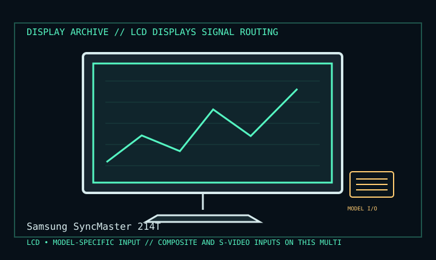

[ INDIVIDUAL COMPONENT // DISPLAY ARCHIVE ]
Samsung SyncMaster 214T
21.3-inch 4:3 professional desktop LCD, mid-2000s.

IDENTIFICATION: Match the exact model suffix, region and installed option boards to the cited manual and rear label. Do not infer electrical compatibility from connector shape.
Model-specific specifications
| Catalog class | Lcd Displays |
|---|---|
| Exact product | Samsung SyncMaster 214T |
| Era / purpose | 21.3-inch 4:3 professional desktop LCD, mid-2000s. |
| Panel / image | 21.3-inch TFT LCD, 1600 × 1200 UXGA native, 4:3; typical 300 cd/m² and 1000:1 in product documentation. |
| Inputs / refresh | DVI-D and 15-pin D-sub VGA; 1600 × 1200 at 60 Hz digital. Analog timings have a broader range; use the Samsung timing table. |
| Additional connections | Composite and S-Video inputs on this multimedia model; USB hub and audio path are ancillary, not digital PC video. |
| Power / mechanical | Maximum approximately 85 W, under 2 W in power-save; 100–240 V AC, 50/60 Hz. Height-adjustable stand supports tilt, swivel and pivot; VESA 100 mm. |
Revision, timing & host compatibility
DVI-D and VGA are distinct digital/analog paths. Composite/S-video do not provide UXGA desktop input. Check EDID and native 60 Hz on digital; verify exact rear suffix because regional 214T packages/connectivity may vary. Do not use a passive HDMI/VGA cable as an active protocol converter.
Before operation, compare source signal type, scan/frame timing, pinout, interface bandwidth, input-board configuration and mains/DC rating against the model-specific manual and nameplate. A listed maximum mode is not a promise of optimum image quality.
Vintage preservation & repair notes
Test each video input, buttons, backlight, USB hub and stand. Record panel uniformity, stuck pixels and any color cast; avoid pressure and use Samsung cleaning instructions. Recycle/repair the internal backlight and power electronics through qualified service.
Record serial/date code, configuration, all installed interface boards, accessories, image condition, calibration state, test source and document edition. Disconnect power before external cleaning and use only the manufacturer-approved procedure; do not open CRT/LCD/OLED equipment without qualified service practice.
Manufacturer manuals & specifications
- Samsung SyncMaster 214T SupportManufacturer support/manual portal for the exact monitor family.
- Samsung SyncMaster 214T Owner’s ManualScanned model manual for timing, setup and connection details.